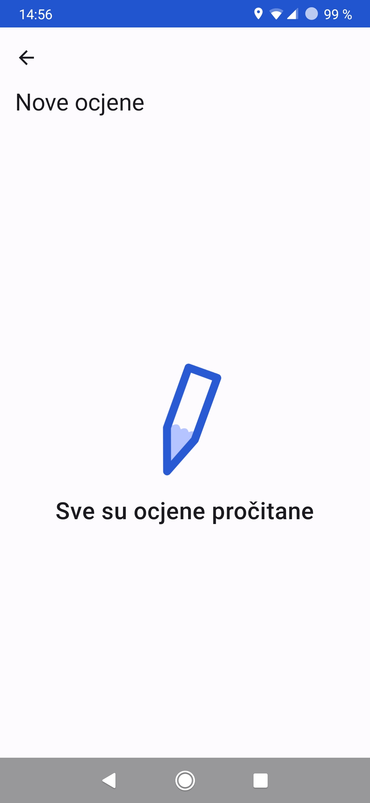
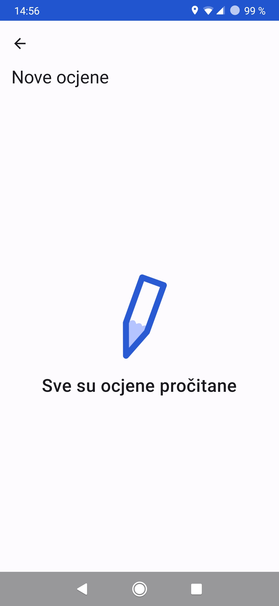

Kako sam krenuo s androidom?
S androidom sam započeo jer sam htio napraviti aplikaciju za jedan svoj projekt nevezan uz programiranje. Kad sam prvi put otvorio Android Studio nisam imao pojma što dalje, osjećao sam se izgubljenim te sam na poslijetku odustao. Nakon par mjeseci volja mi se ponovno vratila (negdje u prosincu 2021.) te sam opet odlučio pokušati, ako ništa drugo barem pratiti ovaj video: https://youtu.be/EOfCEhWq8sg . Uz dosta problema nekako sam dovršio svoju prvu aplikaciju, u nekim trenucima se stvarno činilo iscrpljujuče, ali nisam odustao jer sam imao cilj koji nije bila sama aplikacija već nešto što bi upotpunilo moj već postojeći projek. Ono što je također bilo ključno za ne odustajanje bilo je što me nije bilo briga koliko je kvalitetan moj kod i radmi li sve "kako treba", htio sam napraviti aplikaciju, napravio sam ju i nisam se stresirao što će drugi reći, ima li dosta funkcija, je li dovoljno kvalitetna i postoji li već nešto slično. Nisam odugovlačio s objavljivanje (ajde još samo ovo), objavio sam ju čim je bila upotrebljiva, a tek sam kasnije peglao bugove. Bio sam sretan sa svoji uradkom i nekoliko mjeseci poslije išao sam napraviti drugu aplikaciju, također niske kvalitete, sličnu već postoječim. Objavio sam ju što ranije moguće i ovoga ju je puta netko čak i preuzeo. Nakon što sam napravio te dvije nekvalitetne, ali zabavne aplikacije i nakon što mi se proces svidio odlučio sma uložiti malo u kvalitetu svoga koda te sam počeo proučavati kako se Android aplikacije zapravo rade primarno kroz ovaj YT kanal pomoću kojega i danas učim o androidu (da je barem ova play lista bila dostupna koju godinu ranije: https://www.youtube.com/watch?v=SJw3Nu_h8kk&list=PLQkwcJG4YTCSVDhww92llY3CAnc_vUhsm), no moram napomenuti kako u početku nisam imao pojma o čemu se u tim videima radilo, ali sam se i dalje trudio shvatiti. Kasnije sam započeo verziju 2 svoje prve aplikacije u kojoj sam pokušao povečati kvalitetu svoga koda, no to je i dalje izgledalo kao dječja igra, no ponovno ponavljam, NIJE ME BILO BRIGA, jedini razlog zašto ju nisam objavio bio je što sam u međuvremenu prestao raditi na projektu za koji je bila namijenjena. Nakon toga došao je i siječanj 2023. kada sam krenuo raditi eDnevnik Super, ponovno ponavljam, ZA SEBE I SEBI ZA SVOJ GUŠT, nije me bilo briga što drugi kažu, sklepao sam nešto na brzinu i objavio to s misli: "Možda nekome bude korisno". Još uvijek nisam pisao "kvalitetan" kod, ali barem više nisam zapinjao na najmanjim preprekama tako da je prva verzija bila gotova puno prije bilo koje moje prijašnje aplikacije. Na kraju školske godine vidio sam koliku je popularnost apolikacija zapravo dobila, te sam bio ponoson, no nisam se htio nikome pohvaliti jer sam imao prijašnja iskustva s ljudima (obitelj, prijatelji iz razreda). Kada bih napravio neki projekt i bio jako ponosan, jednom dijeulu ljudi to nikada nije ništa značilo i mislili su da gubim vrijeme. "Bolilo" me slušati kako mi preporučuju nešto i govore kako je to dobro, a moj, iako nevezani uradak, nikada nisu ni pogledali. Ponekad su mi se, nakon par godina, u slučaju nekih iz razreda, čak i smijali. Zaključio sam kako će uvijek, ako znaju da je to moj uradak, imati drugačiji pogled na stvari, s manje: "Kako je to netko napravio!", i više: "Dobro, ali dodaj i..." Zaključio sam da će više cijeniti trud uložen u nešto ako ne znaju tko je to napravio te ako im se pohvalim nakon što su sami otkrili moj projekt. Kao rezultat toga jedini ljudi koji su znali tko stoji iza eDnevnik Super bili su moji roditelji. Bio sam neizmjerno ponosan kada sam ulazio u školu i čuo kako netko nekome govori o mojoj aplikaciji bez da zna da je tvorac aplikacije upravo prošao kraj njega. Za ljetne praznike odlučio sam popeglati sve bugove otkrivene tijekom trajanja škole jer sam, za vrijeme intenzivne popularnosti aplikacije, bio zabrinut da ne napravim neki update koji bi ju mogao pokvariti. Iako sam tijekom ljetnih praznika peglao bugove, što je vjerojatno bilo najteže od svega, večinu sam praznika odlučio provesti radeći baš ono čemu praznici i služe, odmarajući se. Kad sam se vratio u školu krenuo sam raditi na verziji 2.0, velikom updateu. Planirao sam dodati obavijesti o novim ocjenama (obični e-Dnevnik to ima, ali se obavijesti šalju samo ujutro za ocjene od prošlog dana, htio sam to unaprijediti), napraviti da se nove ocjene prate na svakom uređaju posebno (ako jedna osoba otvori e-denvnik na svom telefonu, druga na svom i dalje vidi nove ocjene), itd. Nažalost (ili na sreću, više u nastavku) u drugom je polugodištu izašla nova verzija službenog e-Dnevnika te je moja aplikacija izgubila mnogo svrha među kojima je bila i ona glavna, računanje prosjeka. Budimo realni, nitko nije preuzimao moju aplikaciju kako bi imao pregledniji pregled izostanaka, nego zbog prosjeka. A sad, zašto na sreću? Tijekom pripremanja nove verzije konstantno sam si govorio: "Moram dodati još samo ovo...", što je na kraju dovelo do toga da eDnevnik Super na mene djeluje više kao nešto što moram nego kao nešto za zabavu i ZA MENE. Također sam, privođenjem nove verzije kraju, naučio mnogo o Androidu te mogu reči da napokon znam pisati kvalitetan android kod (kad hoću). Možda se čini glupom odlukom sad kad sam uložio toliko vremena u android, ali prelazim na backend, Go i sl. A imam želju naučiti i C, jednog dana. Tako sam odlučio jer mislim kako je važno, jednom kada nešto naučim, ne se zadržati samo na tome što znam. I još jedna bitna stvar, lako je uočiti da nikada nisam napravio neku "besmislenu" todo ili kalednar aplikaciju. To je zato jer sam uvijek radio samo ono što me zanimalo, što sam htio i što me činilo sretnim te smatram kako je to najbolji način za učenje jer ako te nešto ne zanima i nemaš nekog profesora koji bi ti nakolio paradajze nećeš se natjerati da nešto naučiš. Upravo zbog toga, i nakon velikog poticaja od mnogih ljudi, ne radim na novoj aplikaciji i trenutno se uopće ne bavi programiranjem, to ne znači da se neću vratiti programiranju u budućnosti, no trenutno sam više zainteresiran za elektroniku, VF i sl.
2.3.2024.
Moja priča
Za mene je python bio prvi korak u programiranju. Cijela stvar me zainteresirala u 6. razredu kad sam ga učio u školi. Tada sam radio samo neke problemske zadatke. Iz sličnih tema sam išao i na nekoliko natjecanja, no nikada nisam ostvario nikakav značajniji rezultat, a da budem iskren natjecanja me nisu niti privlačila. Sada imam čvrst stav o natjecanjima, a to je da nema potrebe da se natječem protiv drugih, puno je važnije da se fokusiram na ono što me veseli i zbog čega sam i počeo programirati. Nije mi zanimljivo rješavati neke izmišljenje probleme na temelju koji se mjeri uspjeh i na temelju kojih se rade “tablice” jer ne vidim poantu u tome. Puno mi je draže kada se mogu fokusirati na nešto što me veseli i što mi je zanimljivo te što stvarno ima poantu, tada mi nije važno jesam li “uspio” ili ne jer sam napravio nešto za sebe i svoju volju. Jednom sam upoznao jednog čovjeka koji je član odbora za ocjenjivanje projekata na nekom natjecanju. Sjeo je skupa sa mnom i počeo otvarati neke tabove prije no što je vidio ikakav moj uradak, rekao je da to pročitam da vidim kako natjecanje funkcionira, također mi je objasnio bodovanje. Tek nakon toga mi je pogledao neki projekt, svjestan sam toga da je projekt bio “smeće”, a toga sam bio svjestan i tada, no nije me bilo briga, bio sam ponosan što sam nešto napravio (to je bio neki kviz, no sada sam ga izbrisao jer mi ne treba zauzimati prostor na disku) te sam mu ga pun ponosa pokazao. On je pogledao kod te dao svoje konstruktivne komentare koji su bili realni, govorio mi je što bi moglo biti bolje izvedeno iako sam svega bio i sam svjestan. Ono što me je jako pogodilo bilo je što je u cijelom razgovoru od dobrih sat i pol samo govorio o onome što nevalja te kako bi mi pojedine stvari utjecale na bodove. To me jako iznerviralo jer nisam shvaćao koja je poanta u bodovima, bilo mi je besmisleno slušati o tome kako bi moj projektić prošao na natjecanju jer ga nikada nisam ni namjeravo poslati na natjecanje, radio sam ga sebi za dušu. Jako sam se rastužio nakon tog razgovora, izgubio sam volju i više nikad nisam htio imati posla s bilo kakvim programiranjem, no kao i sve u životu to me prošlo i evo me sad tu, zahvalan sam što mi taj čovjek nije ubio želju za znanjem te što sam uspio odoljeti tugi. Moji projekti nisu nikada bili ništa ambiciozno, uvijek sam radio male stavri za sebe:
- Milijarder (kviz, taj projekt o kojemu sam prethodno pričao, loše napisan, prvo windows, a kasnije i web verzija, kod za web izgubljen [namjerno izgublen])
- Lebdeća kornjača (igrica u pythonu, napravljeno bez specijalnog modula, samo module keyboard i standardni turtle, ni sam ne znam kako sam to dobio da radi)
- Žuti Radio (jedno vrijeme imao sam svoj internetski radio, pa sam htio napraviti i android aplikaciju za njega, to me uvuklo u android)
- WetRadio (pokušaj oživljavanja Žutog Radija novom stranicom; projekt u kojemu sam shvatio da me web development ne privlači previše. https://github.com/pisoj/WetRadio
Nakon pythona, ili bolje reći paralelno s njim, počeo me zanimati Android i htio sam napraviti aplikaciju za svoj mobitel. Preuzeo sam Android studio i pokušao napraviti novu aplikaciju u Kotlin, no to mi je bilo previše komplicirano, odustao sam. Par mjeseci nakon, ponovno sam se okušao u Androidu i ovoga sam puta uspio napraviti nešto jednostavno pa sam krenuo raditi aplikaciju za radio. Ta je aplikacija bila primarno više WebView-a HTML player-a i neke jednostavna polja za zaželjeti glazbenu želju koja bi otvorilal gmail i ispunila sadržaj poruke s za željenom pjesmom. Kasnije, kada sam već imao više skustva s Androidom krenuo sam raditi i 2.0 aplikaciju za radio, no u međuvremenu sam shvatio kako više nemam vremena za taj svoj radio pa sam ga ugasio, kao rezultat toga nikad nisam završio aplikaciju, no ipak sam puno naučio. Ed super je moja prva android aplikacija za koju mogu reći da je napravljena “kako treba”, koristio sam ViewModele, Dependency Injection, razumio sam što je Activity, čemu služi interface te kako pravilo zatražiti dozvole i koristiti WorkManager za rad u pozadini. Aplikacija je možda počela kao samo nešto za mene, no kasnije je prerasla u nešto što mnogi ljudi koriste, kada sam ju ugasio bio sam tužan jer mi je propao najveći projekt ikada na kojemu sam se planiorao izvještiti u backendu i optimizaciji, no u isto vrijeme osjetio sam i olakšanje jer sam rastom aplikacije osjećao pritisak da mora biti dobra. Zanima me Flutter, no i dalje nisam siguran vrijedi li on jer znam koliko i sam volim kada je nešto nativno, tako da nisam siguran trebam li uložiti vrijeme u njega pogotovo zato jer nemam iPhone, a radim sve aplikacije za sebe. Možda ga isprobabm, no čini mi se da ću se zadržati na nativnom. Web development me ne privlači previše, najviše zbog toga što se uvijek sjetim javascripte koja po meni “odiše mirisom heterogene smjese sumpora pomiješanim sa didušikovim tetraoksidom i tetraklorugljikom” i nervira me npm i cijela ta stvar, unatoč tome spreman sam na promjenu mišljenja i interesiraju me stvari kao što su WebAssembly i HTMX koji bi mi mogli promijeniti pogled na web development. Sve u svemu nisam pobornik “javascript treba biti svugdje” pokreta, te kao korisnik ne volim Electron ili IONIC jer su te aplikacije obično sporije na starijim uređajima (želim iscjediti svaku kap iz starog hardwarea), jedu dosta memoriju, rade na svim platformama, a ne uklapaju se niti u jednu, pa ih neću ni koristiti (za programiranje, i dalje moram koristiti Teamse, trebaju mi za školu).
U zadnje vrijeme sve me više zanima backend. Za eDnevnik Super prvo sam htio uportrijebiti Kotlin, no shvatio sam kako se ne smijem stalno zadržavati na onome što znam jer tako neću napredovati, moram isprobavati nove stvari. Tim tokom razmišljanja došao sam do zaključka da bi mi u ovome trenutku najpametnije bilo odabrati Go. Ima garbage collector, a opet i taj low level osjećaj, sintaksa je relativno minimalna i jednostavna, potpuno suprotno od Kotlina (nema kompleksnih objektno orjentiranih struktura) i vrlo je jednostavno implementirati istodobnost s direktnom sintaksnom podrškom za kanale, a kada želiš pokrenuti funkciju u pozadini samo napišeš riječ “go” prije pozivanja funkcije. Sada kad je s eDnevnikom gotovo, odlučio sam se pozabaviti C-om, jer smatram kako dovoljno znam općenito o programiranju i želim doista naučiti kako se memorija ponaša te kako radi koji algoritam (nešto što je u mnogim jezicima skriveno, samo napraviš .sort()), i sl. Za to sam odabrao C jer mi dopušta da radim što hoću s memorijom tako da doista mogu naučiti gdje nastaju problemi te na što trebam paziti. Mislim da je to jako važno razumijeti prije upuštanja u neki memory-safe low level programski jezik kao što je Rust, u suprotnom neću razumijeti od čega me on u stvari štiti. Sada radim jedan mali programčić koji slaže raspored sjedenja u školskim klupama. Drago mi je da sam krenuo istraživati C jer već sada osjećam koliko razmišljam o tome kako koristim memoriju što je jako važno osvjestiti u ljudima, u suprotnom mogli bi završiti s web stranicama koje troše po 2-3 gigabajta memorije, a to, siguran sam, nitko ne želi.
18.1.2024.


 
